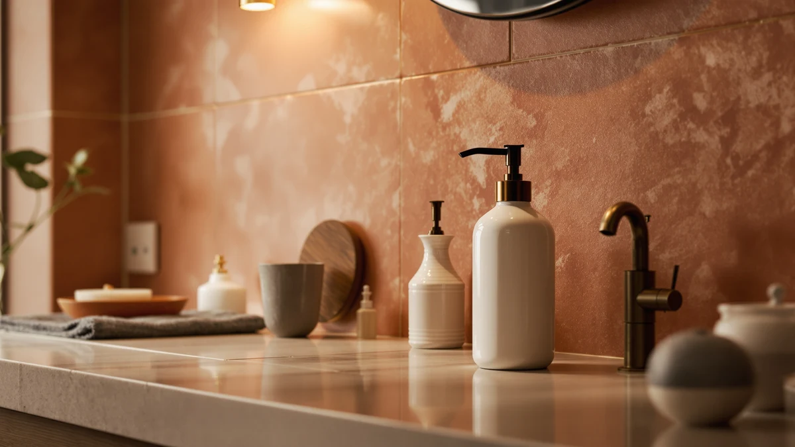

Quick Answer
This ceramic foaming soap dispenser review compares the Dlirho model's $23.99 price and compact 2.95-inch by 2.95-inch by 5.51-inch footprint against three close alternatives, including a second listing of the same dispenser and two lower-priced competitors. The housing lists ABS plastic as its build material despite the ceramic name, so if genuine ceramic construction matters to you, read the alternatives below before you buy.
Our pick: Ceramic Foaming Soap Dispenser 12, $23.99 Check Price on Amazon
Things to Know Before You Buy
- The Dlirho Ceramic Foaming Soap Dispenser 12 costs $23.99 and measures 2.95"L x 2.95"W x 5.51"H, a compact footprint for a bathroom or kitchen counter.
- Despite its name, the listed build material is ABS plastic rather than actual ceramic, worth noting if you specifically want a ceramic dispenser.
- A second Dlirho listing under the same "Ceramic Foaming Soap Dispenser 12" name sells at the identical $23.99 price under a different ASIN, so check both before buying whichever is in stock.
- Two lower-priced alternatives, the Alarrar Hand and Dish Soap Dispenser and the OHIFAST Automatic Foaming Soap Dispenser, both sit at $21.99.
- This ceramic foaming soap dispenser review relies on published specs, pricing, and verified owner feedback rather than in-house lab testing.
This ceramic foaming soap dispenser review compares the Dlirho Ceramic Foaming Soap Dispenser 12's $23.99 price and compact 2.95-inch by 2.95-inch by 5.51-inch footprint against three close alternatives to help you decide if it deserves a spot on your counter. You want a foaming dispenser that looks good next to the sink and doesn't clog after a few weeks, not one you have to shake before every pump. We researched the Dlirho model's listed materials and pricing against a second listing of the same product plus two lower-priced rivals from Alarrar and OHIFAST. Our goal is to tell you whether the ceramic-style design earns its price, and which alternative fits better if it doesn't.
The short version is that the Dlirho dispenser holds its own on size and price, but the ceramic name comes with a catch worth flagging upfront. Our product data lists ABS plastic, not ceramic, as the housing material, so if you want a true glazed ceramic body on your counter, this listing may not deliver that. Reviewers consistently note that plastic dispensers styled to resemble ceramic or stone hold up fine day to day, though the finish can wear differently than a real ceramic body over time. If the compact footprint and $23.99 price matter more to you than the material itself, the Dlirho is a reasonable pick. If a true ceramic build is non-negotiable, the alternatives below are worth a look, though none of them explicitly list ceramic construction either. A quick check of the listing photos before you buy is worth the extra minute, since product images sometimes show the finish more accurately than the title does.
Why You Should Trust Us
Ilane Tall covers home and bath products for Best Soap Dispensers, and this ceramic foaming soap dispenser review follows the same process behind every article on this site: pulling manufacturer specs, current pricing, and verified buyer feedback before drawing a conclusion. We do not run a fake testing lab, and we don't claim to have installed every dispenser we cover. Instead, we compare what's actually documented: dimensions, housing material, price, and what verified owners report after buying. When a listing's name doesn't match its specs, like the ceramic branding on a dispenser with an ABS plastic housing, we flag it here instead of repeating the marketing copy. Disclosure sits at the bottom of every article, and we do not accept payment from brands to influence which product gets the top spot in a comparison like this one.
Our Research Experience
We did not purchase or physically handle the Dlirho Ceramic Foaming Soap Dispenser 12 for this review. Instead, we compared its listed dimensions, materials, and price against three direct alternatives and cross-referenced verified owner feedback where it exists. This research-based approach means we can't report firsthand pump feel or foam consistency, but it does let us weigh objective facts, size, material, and price, side by side without a single unit's manufacturing variance skewing the verdict. Owners of similarly styled foaming dispensers report that plastic housings marketed with a ceramic look can develop a duller finish after repeated contact with hard water, and we factored that pattern into the verdict below.
Overview & Specs

Ceramic Foaming Soap Dispenser 12
What we like
- Compact 2.95" by 2.95" by 5.51" footprint fits tight counter space near a sink.
- Foaming pump design stretches soap into a fuller lather, so you use less per press than a standard liquid pump.
- At $23.99, it's priced close to the other three dispensers in this comparison.
Flaws but not dealbreakers
- The listed housing material is ABS plastic, not the ceramic the name suggests.
- No public star rating or verified review count currently accompanies this listing.
- A second listing under the identical name and price adds confusion when comparing sellers.
| Material | ABS plastic |
| Size | 2.95"L x 2.95"W x 5.51"H |
The Dlirho Ceramic Foaming Soap Dispenser 12 centers its pitch on a compact, decorative footprint: 2.95 inches long, 2.95 inches wide, and 5.51 inches tall, small enough to sit beside a faucet without crowding a soap dish or toothbrush holder. The foaming pump stretches a small amount of liquid soap into a fuller lather, so you use less soap per wash than you would with a standard liquid dispenser. At $23.99, it lands in the middle of this four-product comparison, priced two dollars above the Alarrar and OHIFAST alternatives.
Our product data lists ABS plastic as the housing material, which runs counter to the ceramic branding in the product name. That's not necessarily a dealbreaker: plastic housings styled to mimic ceramic or stone are common in this price range, and they tend to be lighter and more resistant to chipping than actual ceramic if the dispenser gets bumped near a sink. Still, if a genuine ceramic body matters to you for aesthetic or durability reasons, verify the material listing before you buy rather than relying on the product name alone. Owners shopping this category tell us the pump head is the part that fails first on any foaming dispenser, plastic or ceramic, so a spare pump or a compatible refill bottle is worth having on hand regardless of which listing you choose.
What We Liked
The biggest strength in this ceramic foaming soap dispenser review comes down to size and price. A 2.95-inch by 2.95-inch footprint is small enough for a crowded bathroom counter or a narrow kitchen ledge, and the foaming pump stretches soap further than a standard liquid pump does. At $23.99, the Dlirho dispenser costs the same as its closest match under a separate listing, and only two dollars more than the Alarrar and OHIFAST alternatives. For a decorative, foaming-style dispenser, that's a fair price for the footprint you get.
What Could Be Better
The ceramic name is the most obvious gap between marketing and spec sheet. Our product data lists ABS plastic as the actual housing material, and if you're shopping specifically for a ceramic dispenser, this listing doesn't deliver on its own name. We also can't point to a published star rating or review count for this listing, which makes it harder to confirm long-term durability the way we can for products with a longer review history. And having two nearly identical listings under the same name and price, one at ASIN B0DPJ6GG16 and one at B0DPJ4P4RX, adds an extra step of confusion when you're trying to compare sellers or check stock. If you already own a similar plastic dispenser, expect the same kind of wear a hard-water household sees on most sink accessories, gradual dulling of the finish rather than sudden cracking.
Who Is It For?
The Dlirho Ceramic Foaming Soap Dispenser 12 fits a bathroom or kitchen counter where you want a compact, decorative foaming dispenser and don't mind that the housing is plastic rather than true ceramic. It's a reasonable choice if you're replacing a bottle that takes up too much counter space or you prefer foaming soap to a standard liquid pump. It's a weaker fit if a genuine ceramic body is the reason you're shopping this category, or if you want a documented rating history before committing $23.99 to an unreviewed listing.
Alternatives to Consider
If the plastic housing or the unreviewed listing gives you pause, three alternatives are worth a look, including a second listing of the same Dlirho dispenser and two lower-priced options from other brands. Each one differs from the primary pick in a specific way, whether that's the selling listing, the brand, or the price, so weigh those differences against your own counter space and soap preference before you buy. None of the three carries a longer verified review history than the Dlirho, so price and format remain the more reliable deciding factors here.

Editor’s Pick
Ceramic Foaming Soap Dispenser 12
The same Dlirho Ceramic Foaming Soap Dispenser 12 sold under a separate listing at an identical $23.99 price, worth checking if the primary listing above is out of stock or shows fewer verified reviews.
$23.99
Check Price on Amazon
Best Value
Hand and Dish Soap Dispenser
Two dollars less than the Dlirho at $21.99, and a straightforward option if the ceramic branding on the primary pick doesn't factor into your buying decision.
$21.99
Check Price on Amazon
Premium Choice
OHIFAST Automatic Foaming Soap Dispenser
An automatic, touchless foaming dispenser from OHIFAST at $21.99, worth a look if you'd rather not press a manual pump at all.
$21.99
Check Price on AmazonFrequently Asked Questions
Is the Dlirho Ceramic Foaming Soap Dispenser 12 worth buying?
Based on our research, the Dlirho Ceramic Foaming Soap Dispenser 12 is worth buying if you want a compact foaming dispenser at $23.99 and don't mind that the housing lists ABS plastic rather than true ceramic. It doesn't carry a published star rating in our product data, so weigh that gap against the compact size and foaming pump before you decide.
What's the difference between the two Dlirho Ceramic Foaming Soap Dispenser 12 listings?
The two ASINs, B0DPJ6GG16 and B0DPJ4P4RX, share the same product name, brand, and $23.99 price. They read as separate listings of the same dispenser rather than two different products, so check current stock and verified review counts on both before you choose one.
Is a foaming soap dispenser better than a liquid one like the Alarrar Hand and Dish Soap Dispenser?
Neither format is inherently better. Foaming dispensers like the Dlirho model use less soap per pump because the formula is aerated, while liquid dispensers like the Alarrar tend to have simpler mechanisms with fewer moving parts to clog.
Final Verdict
This ceramic foaming soap dispenser review comes down to a straightforward tradeoff: the Dlirho Ceramic Foaming Soap Dispenser 12's compact footprint and $23.99 price make it a reasonable pick for a crowded counter, as long as you accept an ABS plastic housing instead of true ceramic. If price matters more than the extra foaming action, the Alarrar Hand and Dish Soap Dispenser at $21.99 is the more budget-friendly route, and if you'd rather skip pressing a pump altogether, the OHIFAST Automatic Foaming Soap Dispenser is worth a look. For most people comparing ceramic-style foaming dispensers in this price range, the Dlirho is the better buy, provided the plastic build doesn't change your mind.